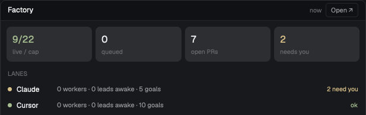

You watch it in the web UI, or on a Mac in the Herdr desktop app.
The web UI is read-only and runs on your Debian or Ubuntu machine.
A Mac can watch through the Herdr desktop app. The factory does not run on macOS yet.


The web UI is read-only and runs on your Debian or Ubuntu machine.
A Mac can watch through the Herdr desktop app. The factory does not run on macOS yet.
